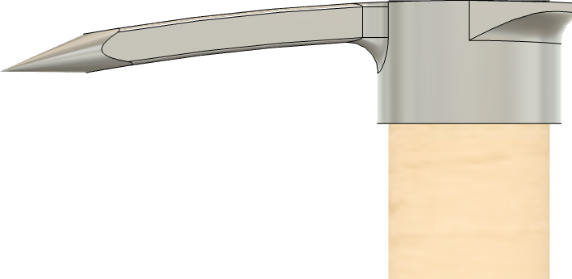
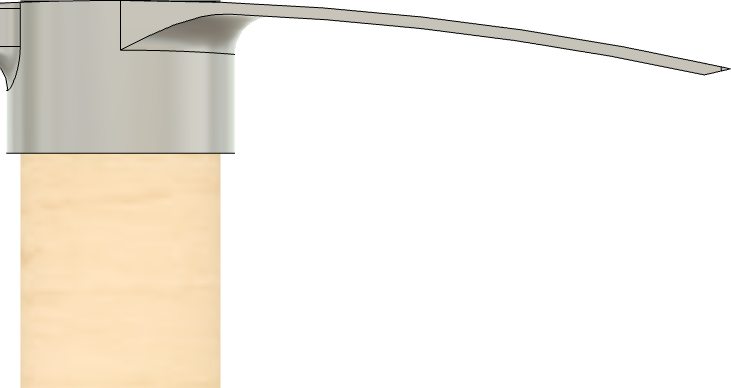
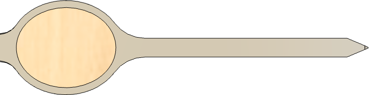

|
|
|
Pick Mattock & Pickax |
Pick Mattock (left) & PickAx (right)
A Pick Mattock is a commonly used tool at the home, and its use is usually followed by the use of some form of pain relief.
These are all commonly called a pickax; however there are two separate tools. Both have a pick on one side, but the other side is what differentiates these two.

click on the gray block to see more
The angles for each edge are shown below.
|
A man says a lot of things in Summer he doesn't mean in Winter. Patricia Briggs |
There is a strong liklihood that this tool will be impacting bricks, rocks, or other construction debris. They do not need to be terribly sharp (thusly, the sharpness scale rating of 3). Also, if you miss and hit yourself, you will want to mimimize the damage to your leg.
|
General Guidelines |
|||
|---|---|---|---|
|
End |
α |
Range |
Comments |
|

Pick side view |
25° | 20° - 35° |
Be sure to round off the point. A radius around ⅛” is recommended. |
|

Adze side view |
35° | 30° - 50° |

This end is sharpened on the operator’s side of the edge angle, just as adze is. The noted angle for α is a bevel angle, and should be denoted as β; however this was noted this way for convience. (50% an included angle). As noted in the picture to the right, the corners of the axe end should be rounded off. (This is a top view of the tool; click on the picture to see a larger version.) |
|

Axe top view |
40° | 30° - 50° |
This end is sharpened on both sides of the edge angle, just as an axe is. The noted angle for α is an included angle. As noted in the picture to the right, the top and bottom corners of the axe end should be rounded off. (This is a side view of the tool; click on the picture to see a larger version.) |
The comments regarding rounding off the corners on the adze and axe ends relate to the reality that this tool is sure be found impacting stuff which was not the intended target (e.g., a building’s side). This is particularly prone to happen towards the end of the working session when the user is tired.
Example icon
Sharpness scales (as shown in the grey icon to the left) are used to indicate the recommended sharpenss for the blades noted above. You can click on any of the icons showing the sharpness scale and be redirected to the page describing this more. Lower numbers are duller; higher numbers sharper.
These are general recommendations; you will need to use your own judgment, based on the knive’s intended purpose.

{kind=link}
{kind=link}
{kind=link}
{kind=link}